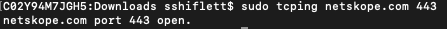
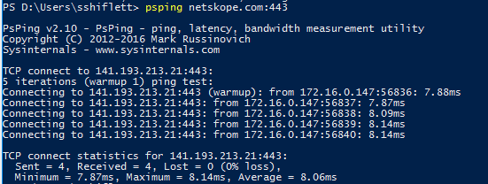
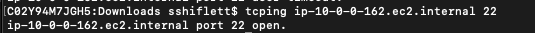
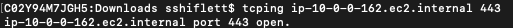
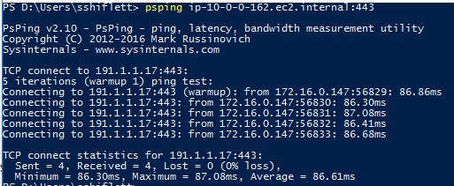

Troubleshooting Performance and Connectivity using TCPing and PsPing
The Netskope Publisher acts as a TCP/UDP proxy. The following tests do not validate end-to-end connectivity. They validate that the Netskope Client can reach the Publisher assigned to the private application. This can be used in conjunction with telnet, ping, and other utilities on the Publisher to validate end-to-end connectivity and round-trip time.
Netskope Private Access (NPA) includes some native troubleshooting tools, such as the UI Troubleshooter and connectivity tests. In some cases, you may want to validate these findings or perform additional troubleshooting steps to see where an issue is occurring. NPA and some customer environments do not support ICMP, so traditional ping and traceroute utilities can’t help in many instances. In such cases, you can use tcping, psping, and more for additional troubleshooting.
This article outlines how to install and use these tools. Instructions are included for both Windows and Mac as well as basic usage. Not every operating system supports tcping and tcp traceroute natively, so you may use the tools below or other implementations. Netskope does not endorse or support the installation, configuration, or troubleshooting of the below tools. They are provided as examples and you may choose to use other tools that perform similar functions.
MAC Installation
Open a terminal window.
Install homebrew by entering
/bin/bash -c "$(curl -fsSL https://raw.githubusercontent.com/Homebrew/install/master/install.sh)"Install tcping by entering
brew install tcping.You can validate that tcping installed by running
sudo tcping netskope.com 443.
Windows Installation
Download PsPing.
Extract the archive to a specific location. If you’d like to reference psping from any command prompt, ensure it is in a directory in your $Path system variable, which is C:\Windows\system32 by default.
Validate that psping installed successfully by entering
psping netskope.com 443.
The below example is using a sample Jira application with the following application definition. Ports 22,80, 443, and 8080 should all be open and responding. These commands will need to run on a machine with a Netskope Client where Private Access is enabled and apps are steered.
 |
Testing with TCPing
Open terminal on the Mac device.
Enter the tcping command with the port that you’d like to validate end-to-end connectivity with. For example,
tcping ip-10-0-0-162.ec2.internal 22. Validate connectivity to additional ports, such 443, by running
tcping ip-10-0-0-162.ec2.internal 443.
Testing with PSPing
Open a command prompt or Powershell window.
Enter the psping command including the hostname and port, such as
psping ip-10-0-0-162.ec2.internal:443.